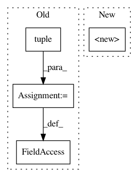

a25498386a3c3144396d82907853c31013c33d4e,scipy/sparse/linalg/interface.py,_CustomLinearOperator,__init__,#_CustomLinearOperator#Any#Any#Any#Any#Any#,331
Before Change
Linear operator defined in terms of user-specified operations.
def __init__(self, shape, matvec, rmatvec=None, matmat=None, dtype=None):
shape = tuple(shape)
if not isshape(shape):
raise ValueError("invalid shape")
self.args = ()
self.shape = shape
self.__matvec_impl = matvec
self.__rmatvec_impl = rmatvec
After Change
Linear operator defined in terms of user-specified operations.
def __init__(self, shape, matvec, rmatvec=None, matmat=None, dtype=None):
super(_CustomLinearOperator, self).__init__(dtype, shape)
self.args = ()
self.__matvec_impl = matvec
In pattern: SUPERPATTERN
Frequency: 3
Non-data size: 4
Instances
Project Name: scipy/scipy
Commit Name: a25498386a3c3144396d82907853c31013c33d4e
Time: 2014-12-26
Author: larsmans@gmail.com
File Name: scipy/sparse/linalg/interface.py
Class Name: _CustomLinearOperator
Method Name: __init__
Project Name: quantumlib/Cirq
Commit Name: 20df07e7d9f87fa601c0ff3e51bb7f4ab4c9ba79
Time: 2020-09-12
Author: balopat@users.noreply.github.com
File Name: cirq/interop/quirk/cells/qubit_permutation_cells.py
Class Name: QuirkQubitPermutationGate
Method Name: __init__
Project Name: quantumlib/Cirq
Commit Name: 06e48928ed9a504dba0985ed9a4fba33709a783a
Time: 2021-03-17
Author: dax.fohl@gmail.com
File Name: cirq/sim/act_on_state_vector_args.py
Class Name: ActOnStateVectorArgs
Method Name: __init__